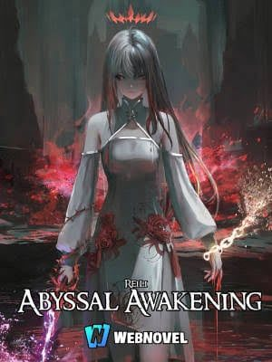

Abyssal Awakening
Synopsis
A noblewoman kept locked away for years of experiments is offered a way out, with a price attached.
The White Room
Summary of chapter 1
Alice is a young woman from a powerful noble family who has been kept locked in a bare white room for ten years. Her mind is held together only by a dream of a peaceful lake.
The story explains how she got there. In her world, a substance called Abyss Blood, taken from beasts of a mirror realm, grants people extraordinary abilities and powers the whole society. On her tenth birthday, a rival family’s plot turned her into a monster, but she recovered, revealing that she is uniquely resistant to the Abyss Blood’s effects. Her family then used her for endless experiments, and a collar now keeps her alive no matter what she does to herself.
The only thing keeping her going is a wish for revenge. One night, a strange man in a feathered jacket breaks into her room, kicks aside the heavy door, and asks whether she wants to leave her hell and trade it for another.